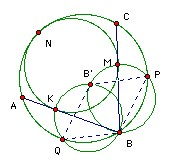
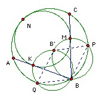

| 1. The equations x2 + ax + 1 = 0 and x2 + bx + c = 0 have a common real root, and the equations x2 + x + a = 0 and x2 + cx + b = 0 have a common real root. Find a + b + c. |
|
| 2. A chooses a positive integer X ≤ 100. B has to find it. B is allowed to ask 7 questions of the form "What is the greatest common divisor of X + m and n?" for positive integers m, n < 100. Show that he can find X. |
|
| 3. O is the circumcenter of the obtuse-angled triangle ABC. K is the circumcenter of AOC. The lines AB, BC meet the circumcircle of AOC again at M, N respectively. L is the reflection of K in the line MN. Show that the lines BL and AC are perpendicular. |
|
| 4. Some pairs of towns are connected by a road. At least 3 roads leave each town. Show that there is a cycle containing a number of towns which is not a multiple of 3. |
|
| 5. Find [1/3] + [2/3] + [22/3] + [23/3] + ... + [21000/3]. |
|
| 6. We have -1 < x1 < x2 < ... < xn < 1 and y1 < y2 < ... < yn such that x1 + x2 + ... + xn = x113 + x213 + ... + xn13. Show that x113y1 + x213y2 + ... + xn13yn < x1y1 + ... + xnyn. |
|
|
7. ABC is acute-angled and is not isosceles. The bisector of the acute angle between the altitudes from A and C meets AB at P and BC at Q. The angle bisector of B meets the line joining HN at R, where H is the orthocenter and N is the midpoint of AC. Show that BPRQ is cyclic.
|
|
| 8. We wish to place 5 stones with distinct weights in increasing order of weight. The stones are indistinguisable (apart from their weights). Nine questions of the form "Is it true that A < B < C?" are allowed (and get a yes/no answer). Is that sufficient? |
|
| 9. R is the reals. Find all functions f: R → R which satisfy f(x+y) + f(y+z) + f(z+x) ≥ 3f(x+2y+3z) for all x, y, z. |
|
| 10. Show that it is possible to partition the positive integers into 100 non-empty sets so that if a + 99b = c for integers a, b, c, then a, b, c are not all in different sets. |
|
| 11. ABCDE is a convex pentagon whose vertices are all lattice points. A'B'C'D'E' is the pentagon formed by the diagonals. Show that it must have a lattice point on its boundary or inside it. | |
| 12. a1, a2, ... , an are non-negative integers not all zero. Put m1 = a1, m2 = max(a2, (a1+a2)/2), m3 = max(a3, (a2+a3)/2 + (a1+a2+a3)/3), m4 = max(a4, (a3+a4)/2, (a2+a3+a4)/3, (a1+a2+a3+a4)/4), ... , mn = max(an, (an-1+an)/2, (an-2+an-1+an)/3, ... , (a1+a2+...+an)/n). Show that for any α > 0 the number of mi > α is < (a1+a2+...+an)/α. | |
| 13. The sequence a1, a2, a3, ... is constructed as follows. a1 = 1. an+1 = an - 2 if an - 2 is a positive integer which has not yet appeared in the sequence, and an + 3 otherwise. Show that if an is a square, then an > an-1. |
|
| 14. Some cells of a 2n x 2n board contain a white token or a black token. All black tokens which have a white token in the same column are removed. Then all white tokens which have one of the remaining black tokens in the same row are removed. Show that we cannot end up with more than n2 black tokens and more than n2 white tokens. |
|
|
15. ABC is a triangle. E is a point on the median from C. A circle through E touches AB at A and meets AC again at M. Another circle through E touches AB at B and meets BC again at N. Show that the circumcircle of CMN touches the two circles.
|
|
| 16. 100 positive integers are arranged around a circle. The greatest common divisor of the numbers is 1. An allowed operation is to add to a number the greatest common divisor of its two neighbors. Show that by a sequence of such operations we can get 100 numbers, every two of which are relatively prime. | |
| 17. S is a finite set of numbers such that given any three there are two whose sum is in S. What is the largest number of elements that S can have? |
|
| 18. A perfect number is equal to the sum of all its positive divisors other than itself. Show that if a perfect number > 6 is divisible by 3, then it is divisible by 9. Show that a perfect number > 28 divisible by 7 must be divisible by 49. |
|
|
19. A larger circle contains a smaller circle and touches it at N. Chords BA, BC of the larger circle touch the smaller circle at K, M respectively. The midpoints of the arcs BC, BA (not containing N) are P, Q respectively. The circumcircles of BPM, BQK meet again at B'. Show that BPB'Q is a parallelogram.
 |
|
| 20. Several thin unit cardboard squares are put on a rectangular table with sides parallel to the sides of the table. The squares may overlap. Each square is colored with one of k colors. Given any k squares of different colors, we can find two that overlap. Show that for one of the colors we can nail all the squares of that color to the table with 2k-2 nails. | |
| 21. Show that sinn2x + (sinnx - cosnx)2 ≤ 1. |
|
| 22. ABCD has an inscribed circle center O. The lines AB and CD meet at X. The incircle of XAD touches AD at L. The excircle of XBC opposite X touches BC at K. X, K, L are collinear. Show that O lies on the line joining the midpoints of AD and BC. | |
| 23. Each cell of a 100 x 100 board is painted with one of four colors, so that each row and each column contains exactly 25 cells of each color. Show that there are two rows and two columns whose four intersections are all different colors. |

Russian home
© John Scholes
jscholes@kalva.demon.co.uk
21 December 2003
Last updated/corrected 4 Mar 04